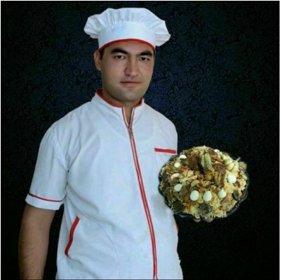
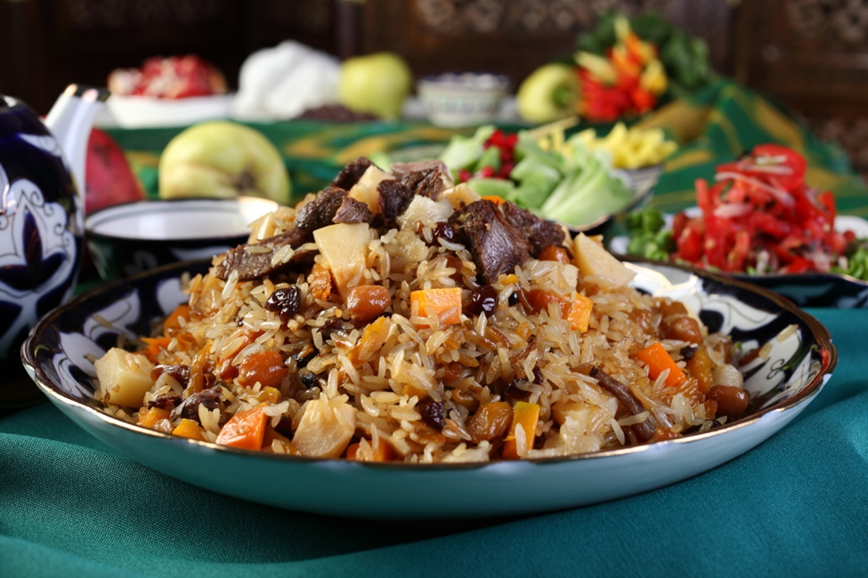

<!DOCTYPE html>
<html lang="en">
<head>
    <meta charset="UTF-8">
    <meta name="viewport" content="width=device-width, initial-scale=1.0">
    <title>Document</title>
    <style>
        table, th, td {
            border: 1px solid black;
            border-collapse: collapse;
            width: 500px;
            text-align: left;
        }
        body{
           background-image:  url(./rasmlar/patteren\ foods.jpg);
        }
        .container{   max-width: 70%;
          margin: 0 auto ;
          background-color: white;
          padding:  20px;
               
        }
        .hero img{
            border-radius: 50%;
        }
        .hero{
           display: flex; 
           justify-content:  space-evenly;
           align-items: center; 
        }
        .hero{
            font-size: 30px;
        }
    </style>
</head>
<body>
    <div class="container">
        <h2>Bizning oshpaz</h2>
        <div class="hero">
             
            <h2>Damir oshpaz</h2>
        </div>

   


      
    <ul>
        <li> <a href="#1">Palov tayyorlash</a></li>
        <li> <a href="#2">Palov tayyorlashketma-ketligi</a></li>
        <li> <a href="#3">Osh pishirish sirlari        </a></li>
        <li> <a href="">O'zbekistonda 1 porsiya	oshning o'rtacha narxlari</a></li>
        <li> <a href="">Osh markazlari</a></li>
        <li> <a href="">Bizdagi polovlar turlari</a></li>
            <ul>
                <li> <a href="">Ivitma palov</a></li>
                <li> <a href="">Samarqandcha palov</a></li>
                <li> <a href="">Sarimsoqli palov</a></li>
                <li> <a href="">Behili palov</a></li>
                <li> <a href="">Kovatok  palov (tokoshi)</a></li>
                <li> <a href="">Kovatok palov (tokoshi)</a></li>
                <li> <a href="">Bedanali palov</a></li>
                <li> <a href="">Pomidorquymoqli palov</a></li>
                <li> <a href="">Qazili palov</a></li>
                <li> <a href="">Po`stdumba palov</a></li>
                <li> <a href="">Moshli palov</a></li>
                <li> <a href="">No`xatli palov</a></li>
                <li> <a href="">Loviyali palov</a> </li>
            </ul>
            <h3 id="1">Palov tayyorlash</h3>
               
               <p>Respublikaning barcha hududlarida 1 kg palov tayyorlash uchun sarflanadigan masalliqlar miqdori o‘rganib chiqilib, mamlakat bo‘yicha o‘rtacha masalliqlar ro‘yxatini shakllantirildi. Unga ko‘ra: </p>
            <ul>
               <li>O‘simlik yog‘i (300 gr.);</li>
               <li>Piyoz (300 gr.);</li>
               <li>Mol go‘shti (700 gr.); </li>
               <li>Sabzi (1 kg.);</li>
               <li>Guruch (1 kg.);</li>
               <li>No‘xat (100 gr.);</li>
               <li>Mayiz (50 gr.);</li>
               <li>Ziravorlar (10 gr.);</li>
               <li>Osh tuzi (5-10 gr.).</li>
            </ul>  
            <h2 id="2">Palov tayyorlash ketma ketligi</h2>
</ul>
    <h4>1-QADAM</h4>
    <p>Guruch bir necha marta toza suvda yuvib olinadi. So’nggi marta yuvganingizdan qolgan suv to’liq shaffof bo’lishi kerak.</p>
    <h4>2-QADAM</h4>
    <p>3 ta piyoz ingichka yarimhalqa, sabzini esa uzun 1 sm`lik somoncha qilib kesib olish kerak. Go’shtni yuvib, kubik shaklida bo’laklab oling. Piyoz va sabzi po’stidan tozalanadi. Sarimsoq ustki qavat po’stidan tozalanadi, lekin kichik boshchalarga bo’linmaydi.</p>
    <h4>3-QADAM</h4>
    <p>Qozon qizdiriladi, moy solinadi va yengil tutaguncha qizdirishda davom etiladi. So’ng qolgan bitta butun piyoz solib, qorayguncha qovuriladi. So’ng olib qo’yiladi.</p>
    <h4>4-QADAM</h4>
    <p>Endi oshning zirvagini tayyorlashga kirishiladi. Qozonga piyoz solib, u tillarang tusga kirguncha qovuriladi (taxminan 7 daqiqa). Piyoz qovurilib bo’lgach, qozonga piyoz ustidan go’sht solinadi va u qobiq hosil qilgunicha qovuriladi.</p>
    <h4>5-QADAM</h4>
    <p>Ushbu bosqichda sabzi solinadi va aralashtirmasdan 3 daqiqa qovuriladi. So’ng barchasi 10 daqiqa vaqti-vaqti bilan aralashtirib turgan holda qovuriladi.</p>
    <h4>6-QADAM</h4>
    <p>Zira va kashnich urug’lari ezilib, osh zirvagiga qo’shiladi. Ushbu bosqichda zirvakning tuzi rostlanadi.</p>
    <h4>7-QADAM</h4>
    <p>Olov o’rtacha balandlikkacha pasaytiriladi va sabzi yumshoq bo’lmagunicha zirvakni pishirishda davom etiladi (yana taxminan 7-10 daqiqa). So’ng zirvakdan 2 sm baland bo’lguncha qaynoq suv solib, ikkita achchiq qalampir solinadi va olov yanada pasaytirilib, 30 daqiqaga dimlab qo’yiladi.</p>
    <h4>8-QADAM</h4>
    <p>qilib yoyib chiGuruch yana bir marta yuviladi, suvi to’kib tashlanadi. Keyin zirvak ustidan bir tekis qiladi. Olov maksimumgacha baland qilinib, guruch ustidan 3 sm baland bo’lguncha kapkirni ustidan qilib qaynoq suv solinadi.</p>
    <h4>9-QADAM</h4>
    <p>Guruch suvni shimib olgach, unga sarimsoq botirib qo’yiladi, olov o’rtacha balandlikkacha pasaytiriladi va guruch tayyor bo’lguncha pishiriladi.    </p>
    <h4>10-QADAM</h4>
    <p>Guruchga kapkir bilan yengil urib ko’riladi. Agar bunda chiqadigan ovoz jarangdor bo’lmasa, guruchda tayoqcha yordamida qozon tubigacha bo’lgan chuqurchalar hosil qilinadi.</p>
    <h4>11-QADAM</h4>
    <p>Guruch tekislanadi, qozonning qopqog’i yopiladi, olov yanada pastroq qilinadi va osh 30 daqiqaga damlab qo’yiladi. Palov tayyor! Uni bedanda tuxumlari, limon, achchiq qalampir bilan bezatish mumkin.</p>
    <p>OSH PISHIRISH SIRLARI
        Har bir taomni tayyorlashda bo’lgani kabi, palovto’ra pishirishning ham o’ziga yarasha sirlari mavjud. Dastlabki tavsiya – osh mazali chiqishi uchun qo’y go’shti olish kerak, albatta boshqa hayvon go’shtlarini ham ishlatsa bo’ladi, lekin kerakli ta’m va xushbo’ylikni aynan qo’y go’shti beradi.</p>
</ul>   
 
<h2>O‘zbekistonda 1 porsiya oshning o‘rtacha narxlari </h2>
   <table>
    <thead>
        <tr>
            <th>#</th>
            <th>Hududlari</th>
            <th>1 porsi palov narxi</th>
            <th>0.5 porsi palov narxi</th>
            <th>1 kg palov narxi</th>
        </tr>
    </thead>
    <tbody>
        <tr>
            <td>1</td> 
            <td>Qoraqalpog’iston R.</td> 
            <td>23 000 so‘m;</td> 
            <td>17 000 so‘m;;</td>  
            <td>43 000 so‘m;</td>    
        </tr>
        <tr>
            <td>2</td>
            <td>Andijon viloyati</td>
            <td>23 600 so‘m; </td>
            <td>17 600 so‘m;</td>
            <td>43 600 so‘m;</td>
        </tr>
        <tr>
            <td>3</td>
            <td>Buxoro viloyati</td>
            <td>28 200 so‘m; </td>
            <td>22 200 so‘m;</td>
            <td>48 200 so‘m;</td>
        </tr>
        <tr>
            <td>4</td>
            <td>Jizzax viloyat</td>
            <td>24 200 so‘m;</td>
            <td>18 200 so‘m;</td>
            <td>44 200 so‘m;</td>
        </tr>
        <tr>
            <td>5</td>
            <td>Qashqadaryo viloyati</td>
            <td>25 800 so‘m;</td>
            <td>19 800 so‘m;</td>
            <td>45 800 so‘m;</td>
        </tr>
        <tr>
            <td>6</td>
            <td>Navoiy viloyati </td>
            <td>22 400 so‘m;</td>
            <td>18 400 so‘m;</td>
            <td>42 400 so‘m;</td>
        </tr>
        <tr>
            <td>7</td>
            <td> Namangan viloyati </td>
            <td>19 800 so‘m;</td>
            <td>13 800 so‘m;</td>
            <td>49 800 so‘m;</td>
        </tr>
        <tr>
            <td>8</td>
            <td> Samarqand viloyati</td>
            <td>27 000 so‘m;</td>
            <td>21 000 so‘m;</td>
            <td>47 000 so‘m;</td>
            
        </tr>
        <tr>
            <td>9</td>
            <td> Surxondaryo viloyati </td>
            <td>25 000 so‘m;</td>
            <td>19 000 so‘m; </td>
            <td>45 000 so‘m;</td>
        </tr>

        <tr>
            <td>10</td>
            <td> Sirdaryo viloyati</td>
            <td>24 200 so‘m;</td>
            <td>18 200 so‘m;</td>
            <td>44 200 so‘m;</td>
        </tr>

        <tr>
            <td>11</td>
            <td> Toshkent viloyati </td>
            <td>23 500 so‘m; </td>
            <td>17 500 so‘m;</td>
            <td>43 500 so‘m;</td>
        </tr>

        <tr>
            <td>12</td>
            <td> Farg‘ona viloyati</td>
            <td>21 300 so‘m;</td>
            <td>15 300 so‘m;</td>
            <td>41 300 so‘m;</td>
        </tr>

        <tr>
            <td>13</td>
            <td> Xorazm viloyati </td>
            <td>24 800 so‘m;</td>
            <td>18 800 so‘m;</td>
            <td>44 800 so‘m;</td>
        </tr>

        <tr>
            <td>14</td>
            <td>Toshkent shahri </td>
            <td>29 000 so‘m.</td>
            <td>23 000 so‘m. </td>
            <td>50 000 so‘m.</td>
        </tr>
    </tbody>
</table>
<h2>Osh markazlari</h2>
<ul>
    <li><a href="https://www.goldenpages.uz/uz/company/?Id=90364">"MAR MAR" SHARQ TAOMLARI RESTORANI</a></li>
    <li><a href="https://www.goldenpages.uz/uz/company/?Id=93270">"SAM OSH" KAFESI</a></li>
    <li><a href="https://www.goldenpages.uz/uz/company/?Id=99242">"555" OSH MARKAZI</a></li>
    <li><a href="https://www.goldenpages.uz/uz/company/?Id=92654">"BESH QOZON" FILIALI</a></li>
    <li><a href="https://www.goldenpages.uz/uz/company/?Id=84097">"DASTURKHON" KAFESI</a></li>
    <li><a href="https://www.goldenpages.uz/uz/company/?Id=98755">"PLOV CITY" KAFESI</a></li>
    <li><a href="https://www.goldenpages.uz/uz/company/?Id=70050">"ROST BARAKA" MChJ</a></li>
    <li><a href="https://www.goldenpages.uz/uz/company/?Id=86077">KAMOLON</a></li>
    <li><a href="https://www.goldenpages.uz/uz/company/?Id=102220">REGISTAN OSH</a></li>
<ul>
<h1>Ivitma palov</h1>
<p>Palovni tayyorlash guruch ivitishdan boshlanadi, buning uchun tozalangan guruchni 3 4 marta yuvib, iliq suvga tuz solib (1 kg
    guruchga 1 osh qoshig'ida tuz) ivitiladi. Ivitish muddati kamida 2 soat. Bizning tajribamizga ko'ra, guruch tuzli suvda 24 soatcha 
    ezilmay (uqalanmay) turaveradi. Go'sht, yog', sabzi va piyozni yuqoridagi tavsiyalardagidek to'g'raysiz. Ushbu palovning 
    parhyezligini orttirish uchun o'simlik yog'i (paxta, zig'ir, kungaboqar, makkajuxori, zaytun yog'larida, tayyorlasangiz yaxshi bo'ladi. 
    Bunda paxta va zig'ir yog'larini o'rtacha olov bilan uzoq muddat 1 soat, to oq tutun chiqquncha dog'laysiz, kungaboqar, 
    makkajuxori va zaytun yog'larini esa uzoq dog'lamasdan, qizishi bilanoq to'g'ralgan go'shtni solasiz. Uncha qizartirib yubormay, seli 
    chiqa boshlaganda halqa-halqa qilib to'g'ralgan piyozni solasizda, bir-ikki aralashtirgach, to'g'rab-tayyorlab qo'yilgan sabzini bir 
    qatlam qilib soling-da, darhol suv quyib, 1 soat davomida mildiratib qaynatasiz, Shu vaqt ichida zirvakka tuz, zira solasiz, qalampir 
    va zirk solinmaydi. Zirvak ho'b pishgach, ivitilgan guruchni qatlam qilib solasiz, olovni balandlatib, guruch yuzi bilan barobar 
    qaynoq suv quyasiz, tuzini rostlaysiz, mobodo suvi tez tortilib, guruchi hali tirik bo'lsa, issiq, suvdan yana sevalaysiz. Shunday qilib 
    ivitilgan guruch qozonga tushgach, yana qancha suv tortsa shuncha quyib turasiz. Shunisi ham borki, guruchli qatlamni kapgir bilan 
    chuqarib, ola qolganlarini qozonning qaynayotgan joylariga surib, yuzini silab qo'ysangiz suvi yaxshi tortiladi va palov sochiluvchan 
    bo'lib pishadi. Suvi tortilgan guruchni qozon o'rtasiga gumbaz qilib to'plab, 20 25 minut davomida damlab qo'yasiz, olovini tortib 
    olib,.gaz bo'lsa oxirigacha pastlatiladi. Qozonda palovni yaxshilab aralashtirib, laganga solasiz va xohlagan salatlardan biri bilan 
    dasturxonga keltirasiz. Masalliq: 1 kg guruch, 1 kg go'sht (qo'y yoki mol go'shti), 250 gr yog' (o'simlik moylaridan biri yoki qo'y 
    yog'i). 1 kg sabzi, o'rtacha kattalikdagi 2 bosh piyoz, 1 choy qoshig'ida zira, tuz esa ta`bga ko'ra olinadi.
    </p>
<h1>Samarqandcha palov</h1>
<p>
    Qo'y yog'ini mayda to'g'rab, qizitilgan qozonga solib eritgach, jizzani olib, yog'ni uzoq muddat yaxshi dog'laysiz. Bunga lo'ndalo'nda qilib to'g'ralgan go'shtni solib, sirti qizarguncha qovurganingizdan so'ng to'g'ralgan piyozni tashlang-da, bir-ikki kavlang. 
    Piyoz o'ta qizarib ketmay turib, somoncha shaklida to'g'ralgan sabzini qatlam qilib solasiz va sira qovurmasdan va kavlamasdan 
    darhol suv quying. Zirvak qaynaganida tuzini rostlab, zirk, zira, butun yoki tuyilgan qalampir solinadi. O'rtacha olovda mildiratib 
    qaynatib quyib, guruchni tozalab yuvasiz. Zirvak yaxshi yetilib pishganda sabzisi muloyimlashib, go'shti yumshaydi. Ana shunda 
    yuvib tayyorlangan guruchni qatlam qilib solib, suvni normada quyib, o'choqdan cho'g'ni tortib olasiz va alangani kuchaytirasiz. 
    Guruchi suvini yaxshi tortib, bo'rtganda, damlab qo'yasiz, muddati 25 minut. Damlangandan so'ng 10 15 minut o'tganda palovni 
    xomdam qilasiz. Buning ma`nosi: damtovoqni ochib, guruch qatlamini kapgir bilan cho'karib ag'darasiz, shunda ortiqcha bug'i 
    ko'tarilib osh lanj bo'lmaydi va ayrim tirik qolgan guruchlari pastga kumilib, yetilishi uchun imkon tug'iladi, damgirni yana jips 
    yopib suyasiz va damlash oxiriga yetganda laganga suzasiz. Suzish qoidasi bunday: laganga avvalo guruch qatlamini gumbaz qilib, 
    tepasiga, sabzisi bilan go'shtini solasiz. Yoki laganning bir tomoniga guruchni, ikkinchi tomoniga sabzi, go'shtini solib dasturxonga 
    qo'yasiz . Masalliq: 1 kg go'sht, 1 kg guruch., 250 gr qo'y yog'i, 1 kg sabzi, 2-3 bosh piyoz, 1 choy qoshig'ida zira, shuncha zirk, 
    qalampir va tuz ta`bga ko'ra solinadi
</p>
<h1>Bir guruchu bir go`shtli palov</h1>
<p>
    Ushbu palov yog'siz so'qim yoki qora kesak qo'y go'shtidan tayyorlanadi. Go'shtni bamisoli mantiga to'g'ragandek chumchuq tili 
    qilib maydalaniladi va tuz sepiladi. Qozonda yog'ni dog'lab, g'shtni solib qizartirib qovurib chovlida suzib olib quyasiz. Yoqqa 
    suyaklarni tashlab qovurib, so'ng piyozni solasiz va har ikkala masalliqning sirti qizarganda kubik (1x1x1 sm) shaklida to'g'ralgan 
    sabzini tashlab, yarim tayyor bo'lguncha qovuring. So'ngra qozondagi masalliqning i bilan barobar suv quyib, tuz va ziravorlar 
    sepib, sust olovda 50 60 minut davomida mildiratib qaynatib qo'yasiz. Guruchni tozalab, yaxshilab yuvib, zirvak ustidan qatlam qilib 
    solasiz, suv quyasiz va kuchli alanga berib tekis qaynashiga erisha-siz Tuzini yana bir tatib, kerak bo'lsa, rostlaysiz. Guruch suvini 
    terib yaxshi bo'rtganda yuziga haligi qovurib olib qo'yilgan go'sht solib, 25 30 minut damlab quyasiz. Oshni qozonning uzida 
    yaxshilab aralashtirib, laganga gumbaz qilib solib, biron bir salat yoki kertilgan turp bilan birga dasturxonga keltirasiz, alohida 
    shishada uzum sirkasi ham qo'ying. Masalliq: 1 kg guruch, 1 kg go'sht, 200 gr yog' (frityur uchun yana alohida 1 kg yog' olinadi), 
    500 gr sabzi, 3 4 bosh piyoz, tuz va har xil ziravorlar ta`bga ko'ra olinadi.
</p>
<h1>Sarimsoqli palov</h1>
<P>
    Sarimsoqli palovning zirvagi Fargonacha palovda aytilganidek tayyorlanadi, farqi sarimsoq piyoz solinadi. Sarimsoq piyozni ikki xil 
    usulda qushish mumkin. Birinchi usulda sarimsoqni butunligicha, soch qismini pichoq bilan kesib tashlab, bir qavat po'stini archib, 
    sovuq suvda chayqab yuborasiz va kesilgan tomonini pastga qilib zirvakka solasiz, chesnok yarim tayyor bo'lguncha qaynatasiz.
    So'ngra ustidan guruchni qatlam qilib solib, palov pishirishni oxiriga yetkazasiz. Sarimsoq qo'shishning ikkinchi usuli bunday: 
    zirvakni odatdagidek pishiraverasiz. Parraklarga bo'linib, puchog'i archilgan sarimsoqni sovuq suvda chayqab, yuvilgan guruchga 
    aralashtirib zirvakka solasiz va suv quyib pishirishni oxiriga yetkazasiz. Barcha jarayonlar qovurma palov tavsiyasida ko'rsatilgandek 
    amalga oshiriladi. Damlash muddati 25 30 minut. Palovni qozonda yaxshilab aralashtirib, laganga gumbaz qilib solasiz, butun 
    pishgan sarimsoqlarni palov ustiga terib keltirasiz. Masalliq 1 kg guruch, 500 gr go'sht, 200 gr sarimsoq 300 gr qo'y yog'i, 500 gr 
    sabzi, 2 3 bosh piyoz, tuz, zira, zirk va qalampir ta`bga ko'ra solinadi.
</P>
<h1>Behili palov</h1>
<p>
    Yo Fargonacha palov yoki Samarqandcha palovda aytilgandek zirvak tayyorlanadi. Behining tukini artib, to'rt pallaga bo'lasiz-da, 
    urug'i va zaha bo'lgan joylarini olib tashlaysiz, zirvakka solib pishirasiz. Agar zirvakni qovurma palov usulida tayyorlasangiz, unda 
    behi bo'laklarini go'sht va sabzi bilan birga qovurasiz, so'ng suv quyasiz. Mabodo ivitma palov usulida bo'sa u holda behi pallalari to 
    chala pishguncha sabzi bilan birga mildiratib qaynatiladi, so'ng guruch solinadi. Qolgan jarayonlar o'sha tanlangan reseptlar-da 
    aytilgandek. Damlash muddati 25 minut. Taom tayyor bo'lganda behi bo'laklarini ajratib olib, palovni yaxshi aralashtirasiz, laganga 
    solib, yuziga behilarni terib dastur-xonga keltirasiz. Dasturxon ustida mayda bo'laklarga bo'lib iste`-mol etiladi. Masalliq: 1 kg 
    guruch, 500 gr go'sht, 2 dona behi, 500 gr sabzi, 300 gr qo'y yog'i, 2 3 bosh piyoz, zira, zirk, qalampir va tuz ta`bga ko'ra olinadi.
</p>
<h1>Shodibek palovi</h1>
<p>
    Guruchni 4 5 marta yuvib, ivitib qo'yasiz, behini o'rtacha kubik (2 sm3) qilib to'g'rab, buni ham iliq suvga botirib qo'yasiz yoki 
    guruchga qo'shib ivitasiz, aks holda qorayib qoladi. Go'shtni kabobga to'g'ragandek, piyozni halqa-halqa sabzini esa kichik kubik (1 
    sm3) shaklida to'g'raganingizdan so'ng qozonda yog'ni dog'laysiz. Bunga piyozni, so'ng go'shtni solib, qizarganda, sabzini bosib, 
    suv quyib mildiratib qo'yasiz. Zirvak yetilganda, behi aralashtirilgan guruchni solib damlaysiz. Agar behi alohida ivitilgan bo'lsa 
    guruchdan oldin solib, suvini guruch ustidan quyasiz. Suvi yaxshi tortilsin uchun alangani kuchaytirib, guruch qatlamini kapgir bilan 
    cho'karib silab qo'yasiz. Damlash muddati 25 30 minut. Palovni qozonda yaxshi aralashtirgach, laganga suzib dasturxonga tortasiz. 
    Masalliq: 1 kg guruch, 500 gr go'sht, 2 3 dona behi, 300 gr qo'y yog'i, 34 bosh piyoz, 500 gr sabzi, ta`bga ko'ra tuz va ziravorlar 
    olinadi.
     
</p>
<h1>Kovatok palov (tok oshi)</h1>
<P>
    Palov uchun mo'ljallangan qo'y go'shtini ikki qismga bo'lasiz, laxim qismidan qiyma tayyorlaysiz, qolgan suyakli go'shtni piyoz va 
sabzi bilan qovurishga ishlatasiz. Dog'langan yog'da piyoz jazlaganingizdan so'ng, suyakli go'shtni solib qizartirib qorvurasiz, so'ng 
sabzini solasiz, suv quyib sust olovda qaynatasiz. Go'shtning lahim qismidan tayyorlangan qiymaga mayda to'g'ralgan piyoz, tuz va 
murch qo'shib mijiysiz. Uzum barglarini terasiz; bunda yangi chiqqan surxning yuqorisidan uchinchi va to'rtinchi barglarni terib 
olasiz. Bu barglar o'rtacha kattalikda, sirti yiltirok, va ta`mi totimli bo'ladi. Barglarni sovuq suvda chayib yuborganingizdan so'ng har 
birining o'rtasiga taxminan bir choy qoshig'ida qiymadan solib, yumaloq shaklli do'lmalar tugasiz. Do'lmalarning uralgan tomonini 
ostiga qilib taxtaga tersangiz ochilib ketmaydi. Kovatoklarning hammasini tugib bo'lgach, birini ikkinchisiga jipslashtirib igna 
o'tkazib ipga shoda qilib tizasiz. Kovatokni pishirishning ikki usuli bor. Birinchi usuli: ipga tizilgan shodani qozonga sabzi yuziga 
solib, ko'mib turarli suv quyib, mildiratib qaynatib pishirasiz, so'ng guruch solib, odatdagi palovlar singari damlaysiz. Damlash 
muddati 25 30 minut. Dasturxonga tortishda kovatok shodani asta olib palovi aralashtirib, laganga solasiz, yuziga kovatokni qo'yib 
ipini tashlaysiz. Ikkinchi usuli: kastryulkaning tubiga bitta likopcha quyib, do'lmalarning avval kattaroqlarini so'ng maydalarini 
birma-bir terib, tepasiga yana bitta likopcha to'ntarasiz-da, yuzi bilan barobar suv quyasiz. Sust olovda 30 - 35 minut 
pishirganingizdan so'ng, tayyor palov yuziga terib keltirasiz. Masalliq: 1 kg guruch, 500 gr qo'y go'shti, 500 gr sabzi, 4 - 5 bosh piyoz 
tuz va ziravorlar ta`bga ko'ra olinadi. Har porsiyasiga 12 - 15 donadan kovatok hisobida 60-70 ta uzum bargi kerak bo'ladi.

</P>
<h1>Do`lmali palov</h1>
<p>
    Palovga mo'ljallab olingan go'shtni ikki qismga bo'lasiz. Lahimini go'sht qiymalagichdan o'tkazib, mayda to'g'ralgan piyoz, murch, 
    tuz va xom tuxum qo'shib mijiysiz. Tuxum qo'shishdan maqsad, qiyma qalampirning ichidan chiqib ketmaydi. Qalampirning bandini
    olib tashlab, urug'ini qoqib yuborib, yaxshi yuvasiz-da, har biriga to'ldirasiz. Qozonda yog'ni dog'lab, suyakli go'shtni va piyozni 
    solib qovuring, so'ngra sabzini solib, ustiga do'lmalarni terib, ko'mib turarli qilib suv quyasiz-da, sust olovda 1 soat davomida 
    mildiratib qaynatasiz. Tuzini rostlab ziravorlar sepasiz. So'ngra yuvib tayyorlangan guruchni solib odatdagidek damlayverasiz. 
    Damlash muddati 20 25 minut. Dasturxonga tortishda do'lmalarni titib yubormasdan olib, palovni aralashtirasiz va laganga solib, 
    ustiga har bir xo'randa uchun 2 dona hisobida do'lmalarni terib keltirasiz. Masalliq: 1 kg guruch, 1 kg go'sht, 300 gr qo'y yog'i, 500 
    gr sabzi, 4 5 bosh piyoz (ham oshga, ham qiymaga), 1 dona tuxum, tuz, murch, zira, zirk ta`bga ko'ra olinadi, 10 12 dona o'rtacha 
    kattalikdagi chuchuk qalampir kerak bo'ladi.  
</p>
<h1>Bedanali palov</h1>
<p>
    Bedanalarni so'yib, qaynoq suvga botirib olinsa, pati oson yulinadi. Ichini ochib, chavag'ini olib tashlab, issiq suvda yaxshilab yuvib, 
suvini sirshitgach, tuz, murch va zira bir-biriga qo'shib tuyilgan kombiziravor sepib qo'yasiz. Yog'li qo'y go'shtidan tayyorlangan 
qiymaga mayin to'g'ralgan bosh piyoz, qirqilgan kashnich, tuz, murch va xom tuxumdan qo'shib mijiysiz. Har bir bedana ichiga ana 
shu qiymadan to'ldirasiz. Qozonda o'simlik moyini dog'lab, piyozni jazlaysiz va suyakli go'shtni solib qizartirib qovurganingizdan 
so'ng, sabzini solasiz va 2 3 marta kavlab aralashtirib, ustiga ichi qiyma bilan to'ldirilgan bedanalarni terasiz va masalliqni ko'mib 
turarli darajada suv quyib, sust olov berib 1 soatcha mildiratib qaynatasiz. Agar suv to'g'rab, hali bedanalar pishmagan bo'lsa 
qaynok, suvdan qo'shasiz. So'ngra tuzini rostlab, yuvilgan guruchni qatlam qilib solib, keragicha suv quyib, pishirishni oxiriga 
yetkazasiz. Damlash muddati 20 minut. Dasturxonga tortishda bedanalarni asta ajratib olasiz, palovni yaxshi aralashtirib, laganga 
suzgach, yuziga har bir xo'randa uchun bir dona bedana hisobida suzib keltirasiz. Masalliq: 1 kg guruch, 200 gr lahim go'sht, 250 gr 
zig'ir yog'i, 4 5 bosh piyoz, 500 gr sabzi, 6 dona bedana, 12 dona tuxum, tuz va ziravorlar ta`bga ko'ra olinadi.
</p>
<h1>Ilvasinli (kaklik) palov</h1>
<p>
    Kaklikni so'yib, qaynoq suvga pishib olgach, patlarini yulasiz, ichini ochib, chavag'idan tozalaysiz-da, issiq suvda yuvib, 4 yoki 6 
bo'lakka bo'lib, tuz sepib qo'yasiz. Qozonda yog'ni dog'lab, kaklik go'shtini solib qizarguncha qovurasiz va piyoz solasiz, piyoz 
qizargach, sabzini solib ikki-uch aralashtirganingizdan keyin suv quyib, sust olovda bir soatcha mildiratib qaynatasiz. So'ng 
ziravorlar sepib, tuzini rostlaysiz-da, yuvib tayyorlangan guruchni solib, odatdagidek damlaysiz. Damlash muddati 25 30 minut. 
Dasturxonga tortishda kaklik go'shtini ajratib olib, palovni yaxshilab aralashtirasiz, keyin laganga suzib, har bir xo'randaga bir bo'lak 
kaklik go'shti hisobida palov yuziga terib chiqasiz. Masalliq: 1 kg guruch, 1 dona semiz kaklik, 500 gr sabzi, 250 gr o'simlik yog'i, 3 4 
bosh piyoz, tuz va ziravorlar ta`bga ko'ra olinadi.
</p>
<h1>Pomidor quymoqli palov</h1>
<P>Yog'ni dog'lab, piyoz jazlaysiz, so'ng go'shtni solib qizarguncha qovurasiz, keyin sabzini qo'shib, bir-ikki aralashtirasiz-da, suv quyib, 
    50 60 minut davomida mildiratib qaynatasiz. Pomidorlarning Olma, Sovg'a, Volgagrad deb ataluvchi navlaridan apelsin kattaligidagi 
    bir xil, ezilmagan, biroq qip-qizil pishganlarini tanlab olib yuvib yuborgach, band tomonini kesib tashlab, ehtiyotlik bilan o'rtasidagi 
    eti va urug'larini olasiz. Hosil bo'lgan pomidor kosachalarga tuz sepib, laganga to'ntarib qo'ysangiz, seli yaxshi oqib ketadi. So'ngra 
    har bir pomidorning ichiga bir donadan tuxum chaqib, picha tuz va murch sepib qo'yasiz. Tayyor bo'lgan zirvakka yuvilgan guruchni 
    solib, odatdagidek palov damlaysiz. Damlash: oldidan guruch yuzasini kapgir bilan tekislab, qoshiq yordamida chuqurchalar hosil 
    qilasiz. Har bir chuqurchaga bir donadan ichiga tuxum chaqilgan pomidorni joylaysiz, so'ngra damtovoq o'rniga tog'oracha yopasiz, 
    chunki pomidorlarning shakli buzilmasligi kerak. Olovini pastlatib, 25 30 minut dam yedirasiz. Shu muddatda pomidor ichidagi 
    tuxum qotib pishadi. Tayyor bo'lgach, pomidor quymoqu1arni asta olib qo'yasiz-da, palovni aralashtirib laganga suzasiz. Yuziga har 
    bir xo'randaga bir dona pomidor quymoq hisobida qo'yib, dasturxonga keltirasiz. Masalliq: 1 kg guruch, 500 gr qo'y go'shti, 300 gr 
    qo'y yog'i, 2 3 bosh piyoz, 500 gr sabzi, 6 dona tuxum, 6 dona bir xil kattalikdagi pomidor, tuz, zira va murch ta`bga ko'ra olinadi.
</P>
<h1>Qazili palov</h1>
<p>Qazini sovuq suvli idishga solib, 2 soat davomida qaynatib pi-shirasiz. Qaynab chiqishi bilan nina sanching, aks holda yorilib ketadi. 
    Qazi pishgach, qozondan olib sovutib qo'yasiz. Alohida qozonda go'shtsiz palov tayyorlaysiz. Buning uchun o'simlik yog'ini yaxshi 
    dog'lab, piyoz jazlaysiz. Qazini boshqa idishda qaynatib utirmay, shu qozonning o'zida pishirsangiz ham bo'ladi. Ya`ni, piyoz
    jazlangach, qazini to'garak qilib bog'langan holda solib, ustidan sabzini to'kib, darhol suv quyasiz-da, 2 soat mildiratib qaynatasiz. 
    Nina urishni unutmang. Agar suvi bug'lanib ketsa, qaynoq suv qo'shib, to qazisi pishguncha qaynataverasiz. So'ng guruch solasizda, suvini tortgach, 25 30 minut damlab qo'yasiz. Dam yeb bo'lgach, qazini olib, parrak-parrak qilib kesasiz. Palovni aralashtirib, 
    laganga suzasiz va yuziga qazi parraklarini terib dasturxonga tortasiz. Masalliq: 1 kg guruch, 500 gr sazi, 250 gr paxta yog'i, 500 gr 
    sabzi, 2 3 bosh piyoz, tuz esa ta`bga ko'ra olinadi.
    </p>
    <h1>Po`stdumba palov</h1>
    <p>Qozonda o'simlik yog'ini dog'lab, piyoz jazlaysiz va qaynatilgan po'stdumbani 100150 grammli bo'laklarga bo'lib, piyozga qo'shib 
        qovurasiz, sirti qizarganda sabzini solasiz va bir-ikki aralashtirib suv quyasiz. qaynab chiqqach, tuzini rostlab, zira, zirk, tuyilgan 
        qalampir solib, sust olovda 1 soatcha mildiratib qaynatasiz. So'ng guruchni solasiz, suvini tortgach, 2025 minut damlab qo'yasiz. 
        Dasturxonga tortishda po'stdumbani olib, mayda bo'laklarga bo'lib, palov yuziga solasiz-da, nordon anor donalaridan sepasiz. 
        Alohida idishda uzum sirkasi qo'yasiz. Masalliq: 1 kg guruch, 500 gr po'stdumba, 200 gr paxta yog'i, 23 bosh piyoz, 1 kg sabzi, tuz va 
        ziravorlar hamda anor bilan uzum sirkasi ta`bga ko'ra olinadi.
    </p>
    <h1>Kartdumba palov</h1>
    <P>Yaxlit bo'laklarga bo'lingan dumba yog'ini 1 soat davomida qaynatib olib, so'ng sovutasiz. Qozonga paxta yog'i (zig'ir moyi) solib 
        dog'lab, pishirilgan dumba bo'laklarini tashlab, sirti qizarguncha qovurasiz. So'ngra piyozni solib, bir oz aralashtirasiz-da, sabzini 
        qovurmasdan darhol suv quyib (yaxshisi dumba qaynatmasini quyib), sabzi chala pishguncha mildiratib qo'yasiz. Zirvakka tuz, zirk, 
        zira va qalampir ham qo'shing. Tayyor zirvakka yuvilgan guruchni solib, suvi tortilgach, 2025 minut damlab qo'yasiz. Dasturxonga 
        tortishda palovni aralashtirmay, laganga avval guruch qatlamini suzasiz, so'ngra sabzisini ustiga solasiz. Dumbani esa mayda 
        bo'laklarga bo'lib, sabzining yuziga qo'yasiz. Masalliq: 1 kg guruch, 500 gr dumba, 200 gr paxta yog'i, 1 kg sabzi, 2 bosh piyoz,tuz va 
        ziravorlar ta`bga ko'ra olinadi.
    </P>
    <H1>Moshli palov</H1>
    <p>Palov tayyorlashdan 23 kun oldin moshni yuvib,.yassi idishga, masalan, laganga bir-ikki qavat qilib solib, sovuq suv quyib ivitib 
        qo'yasiz. Mosh yaxshi bo'rtishi uchun unga suvdan tashqari havo ham ta`sir etib turishi kerak. Shu sababli yassi idishda ivitiladi. Suv 
        kamayib ketsa, yana quyib turasiz. Ma`lum muddat o'tgach, mosh bo'rtadi, xatto nish ham uradi. Uni kleyonkaga yoyib, bo'rtmagan 
        donalarini terib tashlaysiz. So'ng guruchni yuvib, bo'rtgan moshni unga aralashtirib, sovuq suv quyib olib qo'yasiz. Yog'ni dog'lab, 
        piyoz jazlay-siz, keyin chumchuq tili qilib to'g'ralgan go'shtni solib bir-ikki aralashtirasiz-da, mayda kubik qilib to'g'ralgan sabzini 
        ham qo'shib, chala pishguncha qovurasiz, so'ng suv quyib, 50 minutcha sust olovda mildiratib qaynatasiz, ziravorlar solish mumkinu, lekin tuzi keyin qo'shiladi. Zirvak pishgach, mosh aralashtirilgan guruchni solasiz, keragicha suv quyib, alangani kuchaytirib 
        qaynatasiz, moshi dona-dona bo'lib pishganda tuzini rostlaysiz, aks holda mosh qotib qoladi. Guruchi ham, moshi ham yetilgach, 30 
        minutcha damlab qo'yasiz. Dasturxonga tortishda laganga gumbaz qilib suzasiz. Masalliq: 800 gr guruch, 1 stakan mosh, 500 gr qo'y 
        go'shti, 300 gr qo'y yog'i, 500 gr sabzi, 2 bosh piyoz, tuz va ziravorlar ta`bga ko'ra olinadi.
    </p>
    <h1>No`xatli palov</h1>
    <p>Palov tayyorlashdan bir kun avval no'xatni yuvib, sovuq suvga ivitib qo'yasiz va salqinroq joyda saqlaysiz. Agar suvida pufakchalar 
        paydo bo'lsa, no'xat pishmay kirt-kirt bo'lib qoladi. Shu sababli yoz kunlari suvini ikki-uch bor yangilab qo'yasiz. Ushbu palov uchun 
        go'shtni 10-15 grammli, piyozni odatdagidek halqa-halqa qilib, sabzini esa no'xatcha usulida to'g'raysiz. Guruchni yuvib, iliq suvga 
        23 soat ivitib qo'yasiz. Qozonda yog'ni dog'lab, go'shtni solasiz, sirti qizargach, piyozni tashlaysiz va har ikkalasini qizarguncha 
        qovurasiz. So'ngra sabzini solib, darhol suv quyasiz-da, ivigan no'xatni ham qo'shib 1 soat davomida mildiratib qaynatasiz. No'xat 
        yumshagach, (barmoq bilan ezib ko'ring) zirvakka tuz va ziravorlar solasiz. Tayyor bo'lgan zirvakka ivitilgan guruchni solib,
        keragicha suv quyasiz. Suvi tortilgach, 25 minut dam yedirasiz. So'ng yaxshilab aralashtirib, laganga suzasiz-da, xohlagan salat bilan 
        birga dasturxonga tortasiz. Masalliq: 800 gr guruch, 1 stakan no'xat, 500 gr go'sht, 500 gr sabzi 23 bosh piyoz, 250 gr qo'y yog'i, tuz 
        va ziravorlar ta`bga ko'ra olinadi.
    </p>
    <h1>Loviyali palov</h1>
    <p>Palov xuddi yuqoridagi retsept da aytilgandek tayyorlanadi, go'shtni, piyozni va sabzini hamn o'sha usulda to'g'raysiz. Guruchni 
        yuvib, issiq suvga ivitib qo'yasiz, Zirvakni hozirlab, palovni damlash oldidan qaynatilgan loviyani qo'shib yuborasiz. Buning uchun 
        loviyani yuvib, sovuq suvli idishga solib bir qaynatib olib, qorayib ketgan suvini to'kib tashlaysiz va yana suv quyib, yumshaguncha 
        pishirasiz. So'ngra suvini to'kib tashlab, palovni damlash oldidan guruch yuziga solib, damtovoqni yopasiz, damlash muddati 20-25 
        minut. Palov dam yegach, yaxshilab aralashtirasiz-da, laganga suzib, yuziga murch sepib, dasturxonga tortasiz. Alohida idishda 
        uzum sirkasi beriladi. Masalliq: 800 gr guruch, 1,5 stakan loviya, 500 gr go'sht, 500 gr sabzi, 300 gr qo'y yog'i, 23 bosh piyoz, tuz, 
        zira, murch va sirka ta`bga ko'ra olinadi.
    </p>

  </div>
 </body>
</html>\
 